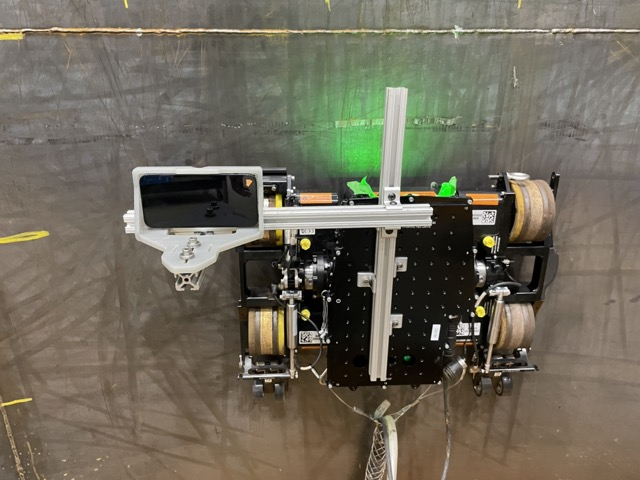

Wheel Adhesion Detection
About Gecko
Gecko Robotics is a startup that engineers robots to perform industrial inspections on critical infrastructure in the energy, paper, and oil/gas industries. Their robots use magnetic wheels to scale the walls of assets such as boilers and tank shells. The robots have a sensor payload that uses ultrasound to measure the thickness of the entire surface area of the asset and determine its structural integrity.
My Intern Project
The Problem
Sometimes, a worn down asset is patched up using non-magnetic materials. Since we can't always determine in advance where these areas are, there needed to be a way to figure out if the robot was experiencing decreased magnetic adhesion to the asset. My project was to prove that we could use Hall-effect sensors to detect this loss of adhesion in order to make the robots safer to operate.
The Process

The hardest part of this problem was figuring out where to place the Hall-effect sensors. Magnetic fields are very difficult to model, so I had to collect data to figure out where to put the sensors. I attached an adjustable rig with an iPhone mount to the robot. I subjected the robot to various scenarios while collecting magnetic field strength data in different locations with the iPhone’s built-in magnetometer. I plotted all the data and picked a general region that I thought would be a good location for a sensor. Then, I ran a magnetic field simulation of that region using ANSYS to fine tune my location down to a point in space.
Next, I designed a four-layer PCB interfacing an STM32 microcontroller with three Hall-effect sensors over an I2C bus. The data collected by the sensors was then passed to the robot’s onboard computer via USB 2.0. By doing this, I was able to learn the fundamentals of Altium Designer, schematic design, and PCB layout. I also had to write the firmware for the PCB using STMCubeIDE
Once the PCB was manufactured and delivered, I assembled it and began running tests with it, only to find that the board was not working. After multiple days of debugging, I learned that I had accidentally swapped the I2C SDL and SCA lines. So, I had to cut some traces and do some rewiring to fix the bus. The board was still not fully debugged yet: I was able to get the microcontroller to talk to the sensors, but the computer was not recognizing my PCB as a USB device. A few more days of debugging led us to discover that the STM32 I was using did not have a built-in USB pull-up resistor. It was not pretty, but the PCB finally worked!
The Outcome
After collaborating with a mechanical engineer to build the mount for the PCB, I collected magnetic strength data, plotted the data, and proved that we could detect when the robot was losing magnetic adhesion. More optimization needs to be done to figure out an even better location to place the sensors. However, this feature I developed will be rolled out onto every robot in Gecko’s fleet in the future.